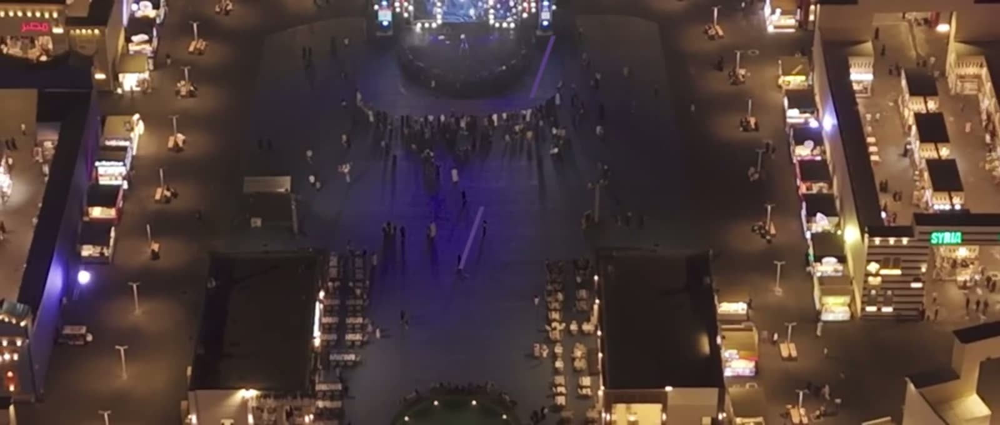
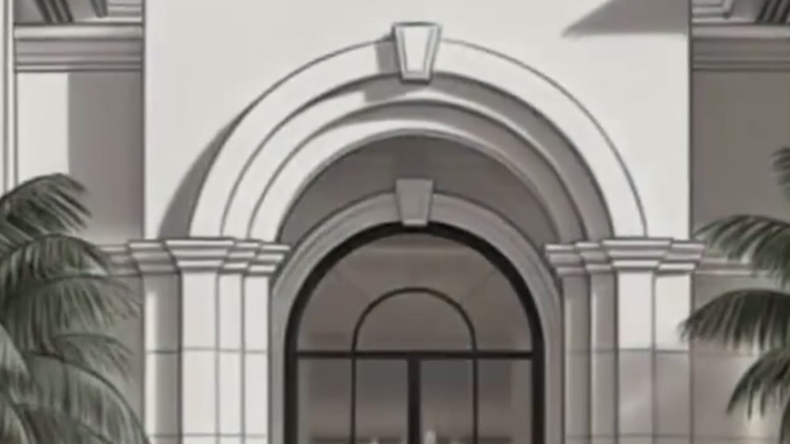
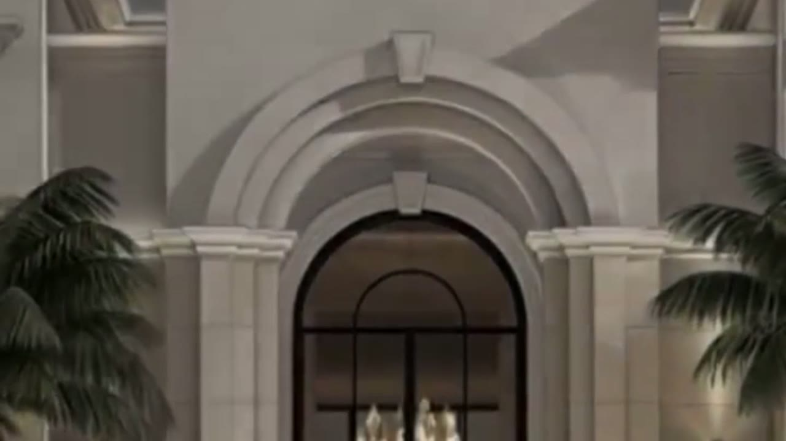

REEL 2026·جدة، السعودية
أوقف اللحظة. ثم أُحرّكها.
ثماني سنوات خلف الكاميرا في السوق السعودي — فعاليات، منتجات، عقار، وإعلانات. أخطّط الجلسة، أبني الإضاءة، أصوّر، ثم أُخرج الملف جاهزًا للنشر.
- فوتوغرافي
- فيديو
- إضاءة
- مونتاج
- موشن
- معالجة

Selected work
أعمال مختارة
ثمانية أعمال تختصر المدى: من ليلة حفلة كاملة، إلى فيلم مكتب محاماة، إلى معلومة قانونية مبنية على الجرافيك، إلى طاولة أكل تُصوَّر من فوق.
Stills
لقطات ثابتة
ذهب، عطور، أزياء، طعام، وعقار. الكاميرا نفسها، والإضاءة تتغيّر حسب ما يحتاجه الموضوع.
Inside one frame
الكادر يكتمل على مراحل
أنظف انتقال هو اللي ما تحسّه. هنا واجهة كاملة تعبر من الخط إلى المادة داخل نفس اللقطة — اسحب الفاصل لترى الجهتين.


البداية النهايةAll work
الأرشيف
اختر المجال الذي يهمّك.
التصنيفات Categories
The method
الصورة تُحسم قبل
ما أضغط الزر.
أغلب الجلسات تُحجز على أساس «تعال صوّر». أول شغل عندي قبلها هو السؤال: وش المطلوب من هذا المحتوى بالضبط، ولمن، وعلى أي منصّة ينشر؟ الإجابة تحدّد العدسة، والإضاءة، والكادر، وحتى وقت التصوير.
بعدها يمشي الباقي على ترتيب واحد: أجهّز الموقع والعدّة، أبني الضوء، أدير الجلسة حتى تخرج اللقطة صحيحة من الكاميرا لا من التعديل، ثم أنتقل للمونتاج والجرافيك والمعالجة — وأسلّم ملفًا جاهزًا للنشر بمقاسه، لا مادة خام تحتاج شغلًا بعدها.
Let's shoot it
عندك جلسة؟
نبدأ من التفاصيل.
قل لي وش تبي تصوّر ووين — وأرجع لك بتصوّر للتنفيذ وموعد.